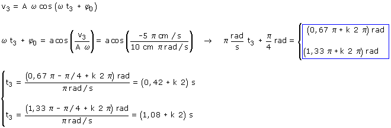
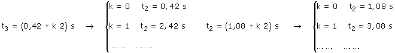

c)
Ecuaciones del movimiento
|
|
Parámetros: A = 10 cm, ω = π rad/s (T = 2π/ω= 2 s) φ0 = π/4 rad |

Aplicación:
Datos: v3 = -5π cm/s, Incógnitas: t3

Se obtienen dos series de infinitos valores del tiempo separados por el valor del período (2 s)

La primera serie de tiempos corresponde a una fase 0.67π: el móvil estará a la derecha del observa-dor moviéndose hacia la izquierda
La segunda serie de tiempos corresponde a una fase 1.33π: el móvil estará a la izquierda del obser-vador moviéndose hacia la izquierda
En cada oscilación, el móvil tiene dos veces la misma velocidad y las posiciones correspondientes son simetricas respecto al origen (Excepto la velocidad máxima de ida o vuelta que sólo se tiene en una posición: el origen)
Valores del tiempo ordenardos: t3 = 0,42, 1,08, 2,42, 3,08,...s
 | t = 0.42 s x = 8.66 cm v = -5π cm/s |